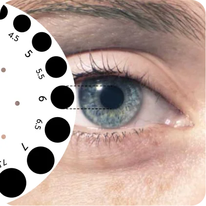

FOR PRECISE PUPIL SIZING
Neuro-Ophthalmologist Designed 4-in-1 Pupil Gauge



BETTER THAN YOUR
CURRENT PUPIL GAUGE...
Our pupil gauge has none of the problems below
Problems with pen torch gauge
- - Limited measurement range
- - Inaccurate larger size readings due to curvature of torch
- - Unable to compare sizing if also using to shine light on pupil
Problems with negative gauge
- - Limited measurement range
- - Difficult to accurately compare white circle with black of pupil. Much easier and faster to compare black circle with pupil
Problems with half-circle gauge
- - Difficult to accurately compare a half-circle with a pupil
- - False readings as half-covering pupil during alignment reduces the amount of light entering eye
DON'T SETTLE FOR LESS - GET YOUR PUPIL GAUGE NOW
Any questions or queries → contact Here